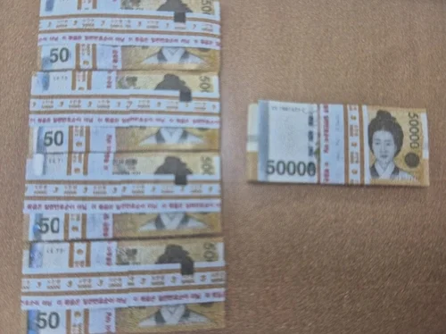

주인 안 나타난 쓰레기봉투 속 2천500만원…최초 발견자 손으로 : 네이트 뉴스

인천 주택가에서 현금 2천500만원이 들어있는 쓰레기봉투가 나왔으나 주인은 끝내 나타나지 않아 최초 발견자에게 소유권이 넘어갔다.
2일 인천 제물포경찰서에 따르면 지난 2월 10일 제물포구 금곡동 빌라 옆에 버려진 20L짜리 쓰레기 종량제 봉투에서 의문의 현금 2천500만원이 발견됐다.
당시 현금다발은 5만원권이 100장씩 한국은행 명의 띠지로 묶인 채 옷가지로 덮여 있었다.
60대 A씨는 헌 옷을 수거하기 위해 쓰레기봉투를 확인하다가 현금다발을 발견하고 경찰에 신고했다.
적지 않은 현금이 쓰레기봉투에서 나오자 경찰은 소유주 신원과 범죄 관련성 등의 규명에 나섰다.
경찰은 먼저 유실물 통합포털과 지역신문에 유실물 습득 사실을 공고하고 습득 장소 주변에 전단까지 부착했다.
나아가 인근 주택 수십세대를 직접 찾아가 현금을 잃어버린 사례가 있는지 샅샅이 살폈으나 소유권을 주장하는 사람은 없었다.
경찰은 지문 감식으로도 소유주를 특정할 만한 생체 정보를 확보하지 못했고,
주변 폐쇄회로(CC)TV 영상에서는 특이 동향이 나오지 않았다.
돈의 출처를 놓고 각종 추측만 제기되는 사이 소유주가 등장하지 않은 채 6개월이 지났다.
유실물은 공고 뒤 6개월 이내에 소유자가 권리를 주장하지 않으면 습득자에게 소유권이 넘어간다.
이에 따라 A씨는 지난 8월 현금 2천500만원 가운데 세금 22%와 지역신문 공고 비용 등 577만원을 제외한 1천923만원을 계좌로 이체받은 것으로 확인됐다.
여기서 세금각을...!
돈세탁